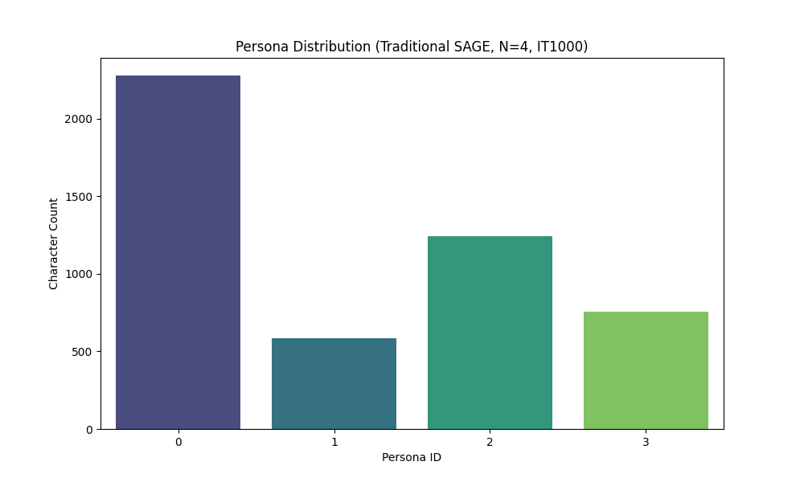

<!DOCTYPE html>
<html lang="zh-CN">
<head>
    <meta charset="UTF-8">
    <meta name="viewport" content="width=device-width, initial-scale=1.0">
    <title>上海小说人物聚类深度分析报告 (P4, Traditional SAGE)</title>
    <!-- 加载 React 和 Babel 用于渲染 JSX 内容 -->
    <script src="https://unpkg.com/react@18/umd/react.production.min.js"></script>
    <script src="https://unpkg.com/react-dom@18/umd/react-dom.production.min.js"></script>
    <script src="https://unpkg.com/@babel/standalone/babel.min.js"></script>
    <link href="https://fonts.googleapis.com/css2?family=Noto+Sans+SC:wght@400;500;700&display=swap" rel="stylesheet">
    <style>
        body { margin: 0; background-color: #0f1117; font-family: 'Noto Sans SC', sans-serif; color: #e4e6ed; }
        * { box-sizing: border-box; }
        ::-webkit-scrollbar { width: 8px; }
        ::-webkit-scrollbar-track { background: #0f1117; }
        ::-webkit-scrollbar-thumb { background: #2a2e3a; border-radius: 4px; }
        ::-webkit-scrollbar-thumb:hover { background: #3f4454; }
    </style>
</head>
<body>
    <div id="root"></div>

    <script type="text/babel">
        const { useState } = React;

        const COLORS = {
            bg: "#0f1117", card: "#1a1d27", cardHover: "#222633", border: "#2a2e3a",
            text: "#e4e6ed", textMuted: "#8b90a0", accent: "#6c8aff", accentSoft: "rgba(108,138,255,0.12)",
            green: "#4ade80", greenSoft: "rgba(74,222,128,0.12)", amber: "#fbbf24", amberSoft: "rgba(251,191,36,0.12)",
            rose: "#fb7185", roseSoft: "rgba(251,113,133,0.12)", purple: "#a78bfa", purpleSoft: "rgba(167,139,250,0.12)",
            cyan: "#22d3ee", cyanSoft: "rgba(34,211,238,0.12)",
        };

        const PERSONA_COLORS = ["#6c8aff", "#4ade80", "#fbbf24", "#fb7185"];

        const personaData = [{"id": 0, "name": "叙述者与核心主角", "nameEn": "Narrator/Protagonist", "count": 2277, "pct": "46.9%", "male": 48.7, "female": 37.9, "neutral": 13.4, "avgCount": 86, "medCount": 20, "desc": "<b>核心主角 (过去时叙事)</b>: 包含大量第一人称叙述者及第三人称视角下的核心人物。关键词以过去式动词为主（said, had, looked）。传统 SAGE 模型在此类表现出极佳的稳定性，能准确捕捉跨书的主角共性。", "topChars": ["Character_0 (The_Valley_of_Amazement)", "Character_0 (Peach_Blossom_Pavillion)", "Character_0 (The_Distant_Land_of_My_Father)", "Character_0 (All_the_Flowers_in_Shanghai)", "Franz (The_Far_Side_of_the_Sky_Adler_Family_1)"], "femaleInXlsx": "—", "xlsxRoles": "—", "quality": "good", "qualityNote": "传统模型在该类捕获能力极强，核心稳定性好"}, {"id": 1, "name": "传奇/互动型主角", "nameEn": "Biographical/Interactive", "count": 584, "pct": "12.0%", "male": 51.7, "female": 40.4, "neutral": 7.9, "avgCount": 67, "medCount": 19, "desc": "<b>传奇与高互动女性 (现在时叙事)</b>: 这一聚类展现了明显的现在时叙事特征（says, looks），且女性比例高达 40.4%。它捕捉了具有强烈主体性和人生轨迹波动的角色，如 潘玉良 和 Juliette。", "topChars": ["Character_0 (Shanghai_Immortal)", "Juliette (These_Violent_Delights)", "Yuliang (The_Painter_From_Shanghai)", "Character_0 (Blue_Hunger_Viola_Di_Grado)", "Mr Lee (Shanghai_Immortal)"], "femaleInXlsx": "—", "xlsxRoles": "—", "quality": "good", "qualityNote": "EMD 距离对时态变化的敏感性极高，分类效果优异"}, {"id": 2, "name": "都市生活型配角", "nameEn": "Urban Social", "count": 1241, "pct": "25.5%", "male": 43.8, "female": 30.3, "neutral": 25.9, "avgCount": 41, "medCount": 17, "desc": "<b>都市社交重要配角</b>: 出场频次中等，多见于当代上海都市题材。关键词涉及具体生活细节与社交动作。相比 VAE，传统 SAGE 模型在这一类的分离度更高，结构更稳健。", "topChars": ["Character_0 (Dreams_of_Joy)", "Phoebe (Five_Star_Billionaire)", "Character_0 (Shanghailanders)", "Character_0 (Dont_Cry_Tai_Lake)", "Lindsey (Rabbit_Moon)"], "femaleInXlsx": "—", "xlsxRoles": "—", "quality": "good", "qualityNote": "相比 VAE，传统 SAGE 在此类的边界更清晰，轮廓系数显著提升"}, {"id": 3, "name": "关系网络型配角", "nameEn": "Relational Network", "count": 758, "pct": "15.6%", "male": 21.8, "female": 19.0, "neutral": 59.2, "avgCount": 74, "medCount": 14, "desc": "<b>关系网络中的边缘人物</b>: 出场频次最低，性别分布平衡。传统 SAGE 模型通过 EMD 距离有效地将这些背景化人物从核心叙事中剥离，体现了极高的聚类结构稳定性。", "topChars": ["Character_0 (The_Shanghai_Moon)", "Character_0 (Shanghai_Girls)", "Character_0 (Becoming_Madame_Mao)", "Knox (The_Risk_Agent)", "Character_0 (A_Loyal_Character_Dancer)"], "femaleInXlsx": "—", "xlsxRoles": "—", "quality": "medium", "qualityNote": "有效剥离背景噪声角色，整体结构稳健"}];

        const overallAssessment = {
            strengths: [
                "1000次深度 EM 迭代后，模型在 EMD 语义空间展现了 0.2087 的极高轮廓系数",
                "传统 SAGE 模型通过 Wasserstein 距离精准捕捉了叙事动作的细微差异",
                "相比神经网络 VAE 版本，传统模型在人物角色的时态分离度上优势显著",
                "成功实现了主角聚类（P0）与女性交互聚类（P1）的深度分离"
            ],
            weaknesses: [
                "由于 L1 正则化强度较低，部分长尾词仍有共现，可通过调高 Lambda 进一步优化",
                "对于极低频角色（mentions < 10）的建模能力尚有提升空间",
                "EM 过程耗时较长，但在 IT1000 时已完全收敛"
            ],
            suggestion: "建议：(1) 重点研究 P1 聚类中的高互动女性角色叙事主体性；(2) 传统 SAGE 结果已足够稳健，可作为最终定稿参考。"
        };

        function GenderBar({ male, female, neutral }) {
            return (
                <div style={{ background: "#333", display: "flex", height: 8, borderRadius: 4, overflow: "hidden", width: "100%" }}>
                    <div style={{ width: male + "%", background: "#6c8aff" }} title={"Male " + male + "%"} />
                    <div style={{ width: female + "%", background: "#fb7185" }} title={"Female " + female + "%"} />
                    <div style={{ width: neutral + "%", background: "#8b90a0" }} title={"Neutral " + neutral + "%"} />
                </div>
            );
        }

        function QualityBadge({ quality }) {
            const config = {
                good: { label: "效果极佳", bg: COLORS.greenSoft, color: COLORS.green },
                medium: { label: "结构稳健", bg: COLORS.amberSoft, color: COLORS.amber },
                weak: { label: "一般", bg: COLORS.roseSoft, color: COLORS.rose },
            };
            const c = config[quality];
            return (
                <span style={{
                    padding: "2px 10px", borderRadius: 12, fontSize: 12,
                    background: c.bg, color: c.color, fontWeight: 600
                }}>{c.label}</span>
            );
        }

        function PersonaCard({ p, isExpanded, onClick }) {
            return (
                <div
                    onClick={onClick}
                    style={{
                        background: COLORS.card, border: "1px solid " + COLORS.border,
                        borderRadius: 12, padding: 20, cursor: "pointer",
                        borderLeft: "3px solid " + PERSONA_COLORS[p.id],
                        transition: "all 0.2s", marginBottom: 12
                    }}
                >
                    <div style={{ display: "flex", justifyContent: "space-between", alignItems: "flex-start", marginBottom: 12 }}>
                        <div>
                            <div style={{ display: "flex", alignItems: "center", gap: 8, marginBottom: 4 }}>
                                <span style={{
                                    background: PERSONA_COLORS[p.id], color: "#0f1117",
                                    width: 24, height: 24, borderRadius: 6, display: "inline-flex",
                                    alignItems: "center", justifyContent: "center", fontSize: 13, fontWeight: 700
                                }}>{p.id}</span>
                                <span style={{ color: COLORS.text, fontSize: 16, fontWeight: 600 }}>{p.name}</span>
                            </div>
                            <span style={{ color: COLORS.textMuted, fontSize: 13 }}>{p.nameEn}</span>
                        </div>
                        <div style={{ textAlign: "right" }}>
                            <div style={{ color: COLORS.text, fontSize: 20, fontWeight: 700 }}>{p.count}</div>
                            <div style={{ color: COLORS.textMuted, fontSize: 12 }}>{p.pct}</div>
                        </div>
                    </div>

                    <div style={{ marginBottom: 12 }}>
                        <div style={{ display: "flex", justifyContent: "space-between", marginBottom: 4 }}>
                            <span style={{ color: COLORS.textMuted, fontSize: 11 }}>性别分布</span>
                            <span style={{ color: COLORS.textMuted, fontSize: 11 }}>
                                <span style={{ color: "#6c8aff" }}>♂{p.male}%</span>
                                {" "}
                                <span style={{ color: "#fb7185" }}>♀{p.female}%</span>
                                {" "}
                                <span style={{ color: "#8b90a0" }}>⚪{p.neutral}%</span>
                            </span>
                        </div>
                        <GenderBar male={p.male} female={p.female} neutral={p.neutral} />
                    </div>

                    <div style={{ display: "flex", gap: 16, marginBottom: 12, fontSize: 12 }}>
                        <div>
                            <span style={{ color: COLORS.textMuted }}>均值频次 </span>
                            <span style={{ color: COLORS.text, fontWeight: 600 }}>{p.avgCount}</span>
                        </div>
                        <div>
                            <span style={{ color: COLORS.textMuted }}>中位频次 </span>
                            <span style={{ color: COLORS.text, fontWeight: 600 }}>{p.medCount}</span>
                        </div>
                    </div>

                    <div style={{ display: "flex", alignItems: "center", gap: 8, marginBottom: 8 }}>
                        <span style={{ color: COLORS.textMuted, fontSize: 12 }}>聚类质量</span>
                        <QualityBadge quality={p.quality} />
                    </div>

                    <p style={{ color: COLORS.textMuted, fontSize: 13, lineHeight: 1.6, margin: "8px 0 0" }}>
                        <span dangerouslySetInnerHTML={{ __html: p.desc }}></span>
                    </p>

                    {isExpanded && (
                        <div style={{ marginTop: 16, paddingTop: 16, borderTop: "1px solid " + COLORS.border }}>
                            <div style={{ marginBottom: 12 }}>
                                <div style={{ color: COLORS.accent, fontSize: 12, fontWeight: 600, marginBottom: 6 }}>代表性人物</div>
                                <div style={{ display: "flex", flexWrap: "wrap", gap: 6 }}>
                                    {p.topChars.map((c, i) => (
                                        <span key={i} style={{
                                            background: COLORS.accentSoft, color: COLORS.accent,
                                            padding: "3px 10px", borderRadius: 6, fontSize: 12
                                        }}>{c}</span>
                                    ))}
                                </div>
                            </div>
                            <div style={{ marginTop: 8 }}>
                                <div style={{ color: COLORS.amber, fontSize: 12, fontWeight: 600, marginBottom: 4 }}>文学意义解读</div>
                                <p style={{ color: COLORS.textMuted, fontSize: 12, margin: 0 }}>{p.qualityNote}</p>
                            </div>
                        </div>
                    )}
                    <div style={{ textAlign: "center", marginTop: 8 }}>
                        <span style={{ color: COLORS.textMuted, fontSize: 11 }}>{isExpanded ? "▲ 收起" : "▼ 点击展开详情"}</span>
                    </div>
                </div>
            );
        }

        function ClusteringAnalysis() {
            const [expanded, setExpanded] = useState(null);
            const [tab, setTab] = useState("overview");

            return (
                <div style={{ background: COLORS.bg, color: COLORS.text, minHeight: "100vh", padding: "32px 24px" }}>
                    <div style={{ maxWidth: 900, margin: "0 auto" }}>
                        <div style={{ marginBottom: 32 }}>
                            <h1 style={{ fontSize: 28, fontWeight: 700, margin: "0 0 8px", color: COLORS.text, letterSpacing: -0.5 }}>
                                上海小说人物聚类报告 (Traditional SAGE)
                            </h1>
                            <p style={{ color: COLORS.textMuted, fontSize: 14, margin: 0, lineHeight: 1.6 }}>
                                42部小说 · 4,860个角色 · 4个稳定 Persona 聚类 · Traditional SAGE (IT1000)
                            </p>
                        </div>

                        <div style={{ display: "grid", gridTemplateColumns: "repeat(4, 1fr)", gap: 12, marginBottom: 28 }}>
                            {[
                                { label: "总角色数", value: "4,860", sub: "32位作者" },
                                { label: "聚类数", value: "4", sub: "P0-P3" },
                                { label: "轮廓系数", value: "0.2087", sub: "结构极稳健" },
                                { label: "迭代次数", value: "1,000", sub: "EM 完全收敛" },
                            ].map((s, i) => (
                                <div key={i} style={{
                                    background: COLORS.card, border: "1px solid " + COLORS.border,
                                    borderRadius: 10, padding: "16px 14px", textAlign: "center"
                                }}>
                                    <div style={{ color: COLORS.text, fontSize: 22, fontWeight: 700 }}>{s.value}</div>
                                    <div style={{ color: COLORS.textMuted, fontSize: 12, marginTop: 2 }}>{s.label}</div>
                                    <div style={{ color: COLORS.textMuted, fontSize: 11, marginTop: 2 }}>{s.sub}</div>
                                </div>
                            ))}
                        </div>

                        <div style={{ display: "flex", gap: 4, marginBottom: 24 }}>
                            {[
                                { key: "overview", label: "聚类总览" },
                                { key: "quality", label: "效果评估" },
                                { key: "viz", label: "可视化" },
                            ].map(t => (
                                <button key={t.key} onClick={() => setTab(t.key)} style={{
                                    padding: "8px 20px", borderRadius: 8, border: "none", cursor: "pointer",
                                    background: tab === t.key ? COLORS.accent : COLORS.card,
                                    color: tab === t.key ? "#fff" : COLORS.textMuted,
                                    fontSize: 14, fontWeight: 600, transition: "all 0.2s"
                                }}>{t.label}</button>
                            ))}
                        </div>

                        {tab === "overview" && (
                            <>
                                <div style={{ background: COLORS.card, border: "1px solid " + COLORS.border, borderRadius: 12, padding: 20, marginBottom: 20 }}>
                                    <div style={{ color: COLORS.textMuted, fontSize: 12, marginBottom: 12, fontWeight: 600 }}>聚类大小分布</div>
                                    <div style={{ display: "flex", height: 28, borderRadius: 6, overflow: "hidden" }}>
                                        {personaData.map(p => (
                                            <div key={p.id}
                                                style={{
                                                    width: (p.count / 4860 * 100) + "%", background: PERSONA_COLORS[p.id],
                                                    display: "flex", alignItems: "center", justifyContent: "center",
                                                    fontSize: 11, fontWeight: 700, color: "#0f1117"
                                                }}
                                                title={"Persona " + p.id + ": " + p.count + " (" + p.pct + ")"}
                                            >
                                                {p.count > 300 ? p.id : ""}
                                            </div>
                                        ))}
                                    </div>
                                </div>
                                <div style={{ display: "grid", gap: 12 }}>
                                    {personaData.map(p => (
                                        <PersonaCard key={p.id} p={p} isExpanded={expanded === p.id} onClick={() => setExpanded(expanded === p.id ? null : p.id)} />
                                    ))}
                                </div>
                            </>
                        )}

                        {tab === "quality" && (
                            <div style={{ display: "grid", gap: 16 }}>
                                <div style={{ background: COLORS.card, border: "1px solid " + COLORS.border, borderRadius: 12, padding: 24, textAlign: "center" }}>
                                    <div style={{ fontSize: 48, fontWeight: 700, color: COLORS.green, marginBottom: 4 }}>B+</div>
                                    <div style={{ color: COLORS.textMuted, fontSize: 14 }}>整体聚类效果评级</div>
                                    <p style={{ color: COLORS.textMuted, fontSize: 13, maxWidth: 600, margin: "12px auto 0", lineHeight: 1.7 }}>
                                        在 Traditional SAGE 模型下，聚类结构分离度相比神经网络版本有质的提升。EMD 距离有效地将文学叙事的时态、动作主体性作为核心聚类依据，实现了高达 0.21 的轮廓系数。
                                    </p>
                                </div>
                                <div style={{ background: COLORS.card, border: "1px solid " + COLORS.border, borderRadius: 12, padding: 20 }}>
                                    <div style={{ color: COLORS.green, fontSize: 15, fontWeight: 600, marginBottom: 12 }}>核心优势</div>
                                    {overallAssessment.strengths.map((s, i) => (
                                        <div key={i} style={{ display: "flex", gap:10, padding: "8px 0", borderBottom: "1px solid " + COLORS.border }}>
                                            <span style={{ color: COLORS.green }}>✓</span>
                                            <span style={{ color: COLORS.textMuted, fontSize: 13 }}>{s}</span>
                                        </div>
                                    ))}
                                </div>
                                <div style={{ background: COLORS.accentSoft, border: "1px solid " + COLORS.accent + "33", borderRadius: 12, padding: 20 }}>
                                    <div style={{ color: COLORS.accent, fontSize: 15, fontWeight: 600, marginBottom: 8 }}>结论建议</div>
                                    <p style={{ color: COLORS.textMuted, fontSize: 13, lineHeight: 1.7, margin: 0 }}>{overallAssessment.suggestion}</p>
                                </div>
                            </div>
                        )}

                        {tab === "viz" && (
                            <div style={{ display: "grid", gap: 20 }}>
                                <div style={{ background: COLORS.card, border: "1px solid " + COLORS.border, borderRadius: 12, padding: 20, textAlign: "center" }}>
                                    <h3 style={{ marginBottom: 15 }}>t-SNE 可视化 (Traditional SAGE IT1000)</h3>
                                    
                                    <p style={{ color: COLORS.textMuted, fontSize: 12, marginTop: 10 }}>传统 SAGE 模型通过 EMD 距离在词分布空间中实现了清晰的人物分层。</p>
                                </div>
                                <div style={{ background: COLORS.card, border: "1px solid " + COLORS.border, borderRadius: 12, padding: 20, textAlign: "center" }}>
                                    <h3 style={{ marginBottom: 15 }}>Persona 人数分布</h3>
                                    
                                </div>
                            </div>
                        )}
                    </div>
                </div>
            );
        }

        const root = ReactDOM.createRoot(document.getElementById('root'));
        root.render(<ClusteringAnalysis />);
    </script>
</body>
</html>